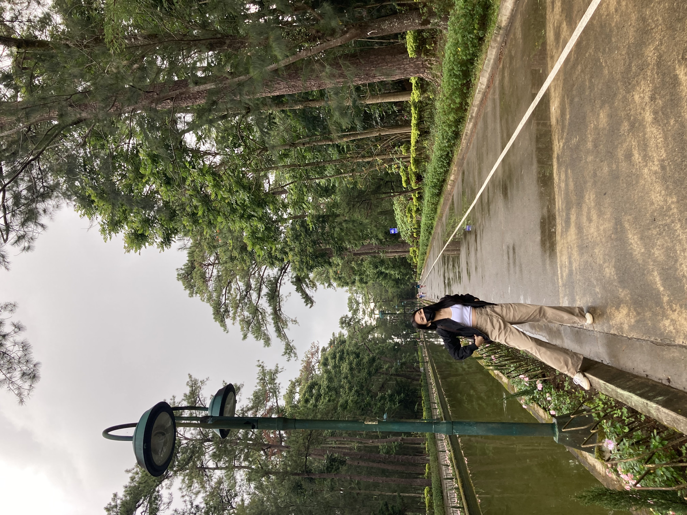
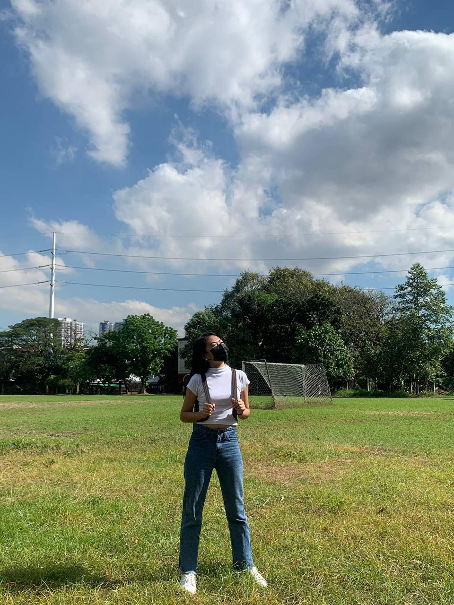
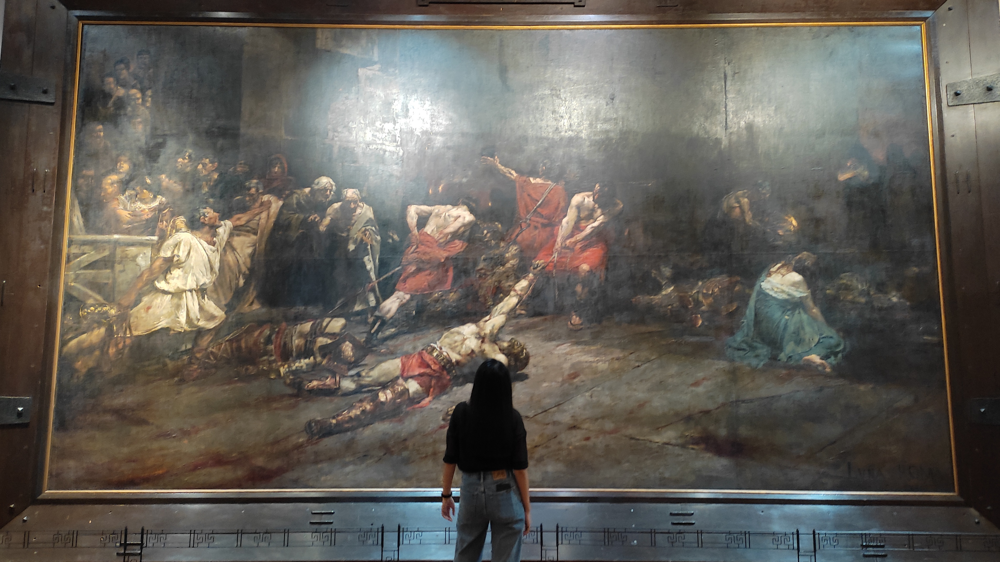

Hello, I'm Jelisha.
I'm a Computer Engineering student.
ABOUT ME
My name is Jelisha Ruth Bugnon. I am 19 years old and I reside in Quezon City. I am in my second year at the Polytechnic University of the Philippines, studying Computer Engineering. I am eager to learn coding and aim to be a full-stack web developer in the future.
EDUCATION
| Stage | School | Year Present | Achievements |
|---|---|---|---|
| Elementary | Adonai Shepherd Academy |
|
|
| Junior High School | Batasan Hills National High School |
|
|
| Senior High School |
Polytechnic University of the Phillipines Science, Technology, Engineering and Mathematics (STEM) |
|
|
| College |
Polytechnic University of the Philippines Bachelor of Sciene In Computer Engineering (BSCOE) |
2021 - Present |
|
SCRAPBOOK
This photo was taken last November 2021 at SM Baguio when my sister and I went on a two-day trip there. I know what you're thinking, but don't worry, I was not cold in my outfit.
Another photo from Baguio. As far as I can remember, we weren't able to go inside The Mansion, so we just walked outside and took pictures on the avenue. Still fun!
I finally had the chance to go outside after two years of being locked down. My friend and I went to PUP to claim our diplomas. The sun is quite scorching in the oval, but who cares? It's my first time seeing the world again!
When you first enter the National Museum of Fine Arts in Manila, the first painting that you will see is the famous Spoliarium by Juan Luna. No one walked past it without snapping a shot. Not even me.

Our section's supposed ID picture appointment was cancelled, so my classmates and I hung out instead. We had a scrumptious lunch, little chitchats, and lots of fun. I had this photo taken at Robinsons Magnolia's mini park.
OTHERS
Favorite Foods
- Sinigang
- Sarsiadong Tilapia
- Tuna Alfredo
- Pork Tonkatsu
- Spam
- Calamares
- Chips
- Fries
- Yema Cake
- YumYum
Pet Peeves
- Not cleaning up the mess after eating
- Not properly folded paper money
- Crumpled handkerchief
- Apathy
- Being late
- Sneezing withour covering mouth
- Never offering to split the bill
- Scraping silverware
Dream Destination
- Batanes
- Palawan
- Cebu
- Boracay
- Vigan
- Siargao
- Ifugao
- Bohol
- La Union
- Baguio